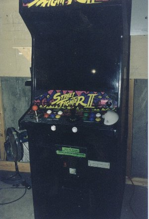

Pictures Of My Cabinet
You'll have to excuse the clarity of some of these shots. I had a cheapie roll of 200 ASA film left over that someone gave me. The roll jammed up half way through the photo shoot and I had a hell-of-a-time making my camera advance to each next frame. Consequently, the film broke during development and only about half of the shots came out. I will post more screen shots when I get the next roll developed. Sorry.

A shot of my full-sized cabinet.
Frontal shot.
A screen shot of TMNT, I think. None of the other pics turned out for some reason. Maybe the lighting or something. April 8, 1999 - I realize now that the shutter speed of the camera's lens was faster than the screen's 60HzI (30Hz) refresh, therefore chances are that you will end up with a blank picture of the screen more than 90% of the time. What a waste of film!
Here's the PC hardware.
The inside of the cabinet. (Original and modified parts)
My homemade JAMMA board to connect VGA2RGB cable to the CRT and the sound card to the speakers.
The slightly altered Street Fighter II control panel.
The huge mess of wires used to connect the controls and buttons to the keyboard interface. (What a mess!)
The hacked keyboard assembly soldered to a DB-25 socket.
This is a shot of the bottom front of the cabinet